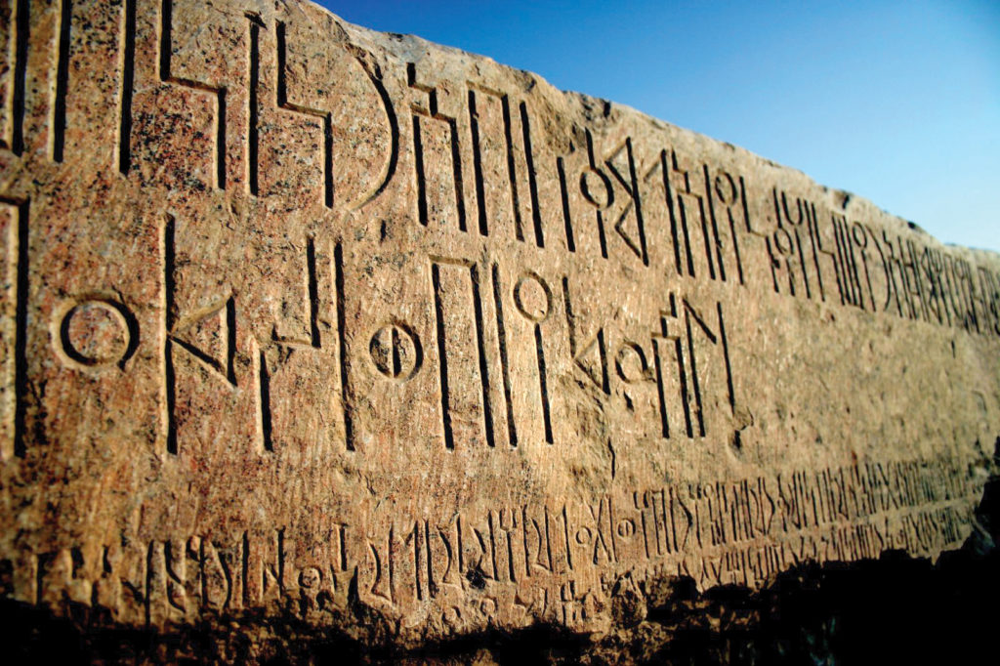
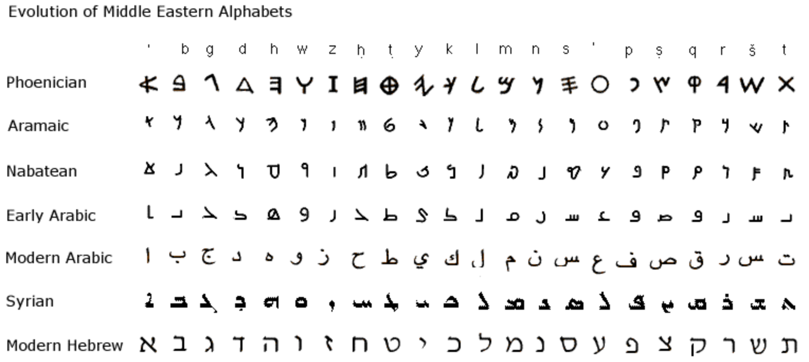
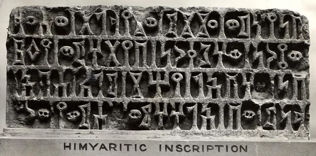
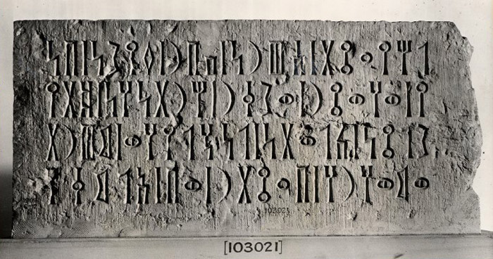

Yemen is a country located at the southern end of the Arabian Peninsula, known for its rich history and diverse culture.
It has been a crossroads for civilizations for thousands of years, featuring ancient trade routes that connected the East and West.
1. Ancient Civilizations
Yemen's history dates back thousands of years, with evidence of ancient civilizations like the Sabaeans and Himyarites.
The region was a major player in trade routes, connecting Arabia to Africa and Asia. The capital of the Sabaean kingdom, Ma'rib,
was known for its impressive dam, which was an engineering marvel of its time.
2. The Islamic Conquest
In the 7th century, Yemen embraced Islam during the time of Prophet Muhammad.
The region became crucial for the early Islamic community, serving as a base for further expansions into the Arabian Peninsula and beyond.
The Zaydi imams later established significant political power in northern Yemen.
3. The Ottoman Era
Yemen was incorporated into the Ottoman Empire in the 16th century.
This period saw significant administrative changes and architectural developments.
The Ottomans attempted to control trade and manage local governance, leading to a unique blend of cultures and influences.
4. The Modern State
The 20th century brought about dramatic changes, including the struggle for independence from British colonial rule in the south, leading to the establishment of the People's Democratic Republic of Yemen in 1967.
The unification of North and South Yemen in 1990 marked a significant moment in the nation’s history.
5. Language in Yemen's History




Yemen has a rich linguistic history, with ancient languages such as Sabaean and Himyaritic that were once spoken in the region.
These languages were part of the Old South Arabian language group, which had unique scripts and inscriptions that can still be found in historical sites today.
Over time, Arabic became predominant with the spread of Islam, though Yemen's dialects retain influences from earlier languages.
In modern times, the Arabic language, specifically the Yemeni dialect, reflects Yemen’s diverse cultural history, with variations across different regions.
6. Recent Developments
Yemen has faced significant challenges in the 21st century, including civil war and humanitarian crises.
Efforts for peace continue amidst the ongoing struggles, highlighting the resilience of the Yemeni people and their rich cultural heritage.
Explore The Universe
The history of Yemen is a tapestry woven from the threads of ancient civilizations, cultural exchanges, and the resilience of its people.
From the legendary kingdoms of the Sabaeans and Himyarites to the modern struggles for peace and stability, Yemen's past informs its present
and shapes its future. As we reflect on the historical milestones that have defined Yemen, it becomes clear that understanding this rich heritage
is vital to appreciating the culture and identity of the Yemeni people today.